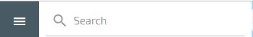
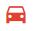
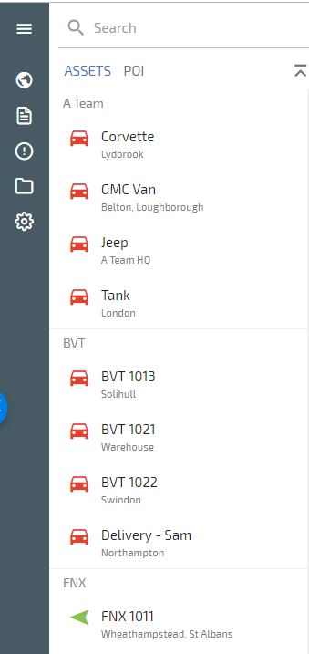
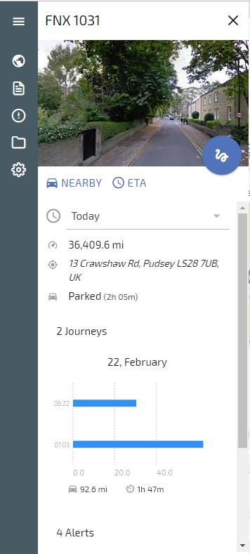
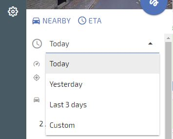
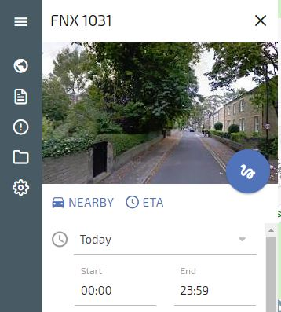
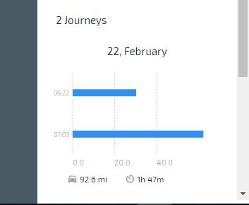

Left Hand Menu¶
Search Function¶
The Search function is located at the top of the left menu

You can use this to search for Assets, POI’s and Asset Groups
Assets List¶
Your assets are listed alphabetically here
Click on the Asset Icon  to Zoom and centre the vehicle on the map

Click on the Asset Name to Zoom and centre the vehicle on the map and open the vehicle summary, shown below

Here you can view the vehicle details, current location, the day’s journeys, and change the time and date to show previous journeys.
By clicking on ‘TODAY’ under the Google Street view image you can choose from Yesterday, Last 3 Days and Custom date range

By clicking on the clock under the Google Street view image you can choose a Start and End time for which to show journeys for:

Clicking on the Blue circle with the snail trail shows the snail trail for the whole day
The days journeys are displayed in a chart form as shown below, each blue bar represents a journey

Clicking on a journey brings up the snail trail for that journey and the journey details including start and finish addresses, mileage, duration and average speed
POI (Point Of Interest) List¶
Clicking on POI brings up the POI list, you can click on a POI to see the details and edit that POI.
See the POI section of this guide for creating, editing and deleting POI’s